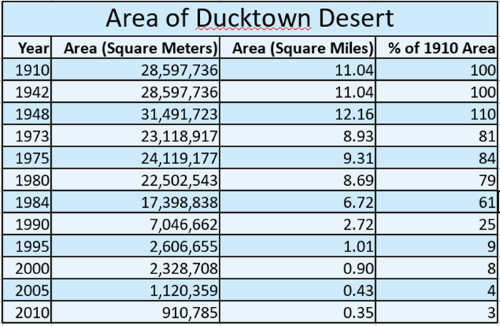
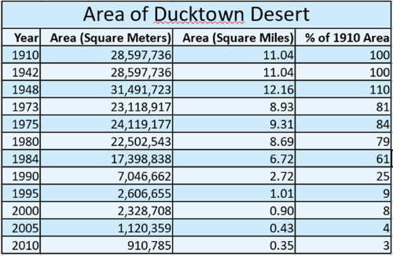
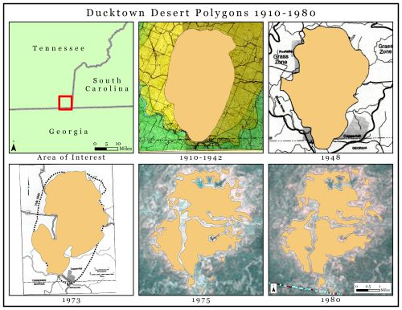
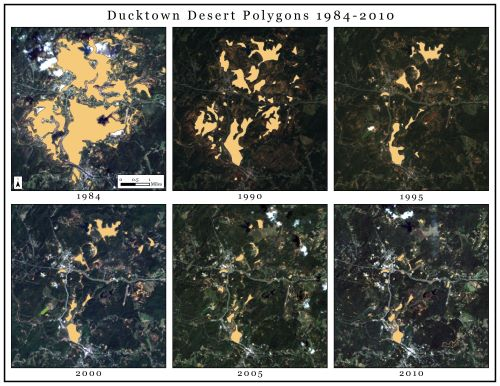
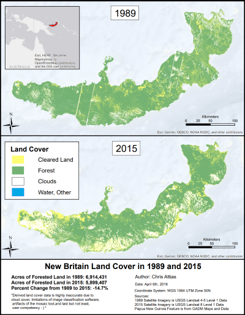

Portfolio
Welcome to my portfolio! This is an odd thing to say for someone who was always the least artistic person in his family. Despite this lack of talent and job positions that rarely necessitated the creation of dashing digital media, this personal portfolio page presents a few pretty projects I've crafted over the years.
The "search results" below describe each project and display medium size images. Every image can be clicked to open an enlarged version in a new browser tab. They are sorted in reverse chronological order.
This Website
Let's start with the elephant in the room, this personal website! It is a mobile-first, responsive website built with accessibility in mind. It was made for the capstone project in the Web Design for Everybody Coursera Specialization taught by UC Michigan's Colleen van Lent. The HTML, CSS, and JS are coded from scratch, though I hope you can tell it is based upon a certain search engine.
Denuded Land in the Ducktown Dessert Maps
For a century between the late 1800s and late 1900s a region in southwest Tennessee was known as the "Ducktown Dessert" despite receiving almost 60 inches of rain annually. Logging, grazing, sulfur dioxide emissions from copper mining, and erosion degraded an area of nearly 50 square miles. Thanks to generations of hard work by various government agencies and multiple mining companies, increased restoration science, and improved environmental policy, the Copper Basin once again looks like much of Appalachia—rounded mountain slopes are covered in a thick blanket of pines, broad leaf trees, and grasses.
This is what us raft guides learned when our company, Wildwater, took us on a field trip to the local Duck Town Basin Museum. It so happened that this field trip coincided with the need for a capstone project for the Geographic Information Systems (GIS) Coursera Specialization taught by UC Davis' Nick Santos. The result? I mapped and calculated the area of denuded land (bare earth with no vegetation) over the years. This was primarily done by georeferencing historical paper maps and manually drawing vector polygons on satellite imagery. Below, I present a table summarizing the area of denuded land and the maps used to calculate these areas.
 



New Briton Land Cover Maps
Southeast Asia holds one the largest tropical rainforests in the world. The island of New Guinea is at the heart of this ecologically critical area. Northeast of New Guinea lies an island named New Briton, which is roughly the size of Taiwan. New Briton has one of the highest deforestation rates in the region.
As a project for the same GIS course mentioned earlier I derived land cover types on New Briton using image classification software. The area of forested land in 1989 and 2015 was calculated and compared. These measurements are inaccurate because of partial cloud cover in satellite imagery. It turns out rainforests often have rain clouds and rain clouds are bad for satellite imagery.

13th Annual Klamath-Trinity Fish Fair Poster
Up in northern California there is an annual educational event called the Klamath-Trinity Fish Fair. Nearly 1,000 students from all over the area gather at Hoopa Elementary to learn, play, and celebrate the local watersheds. As Americorps Watershed Steward members, my site partner Brianna Walsh and I were responsible for the majority of the event planning. We also gathered art from the students and made a fun poster!

Fat Tire Parody Beer Label
Last and least...I took a photography course in high school that taught us Adobe Photoshop...I also brewed beer in high school...I was never very good at either....at the time I also entertained a self-delusion regarding my comedic abilities....I apologize in advance...